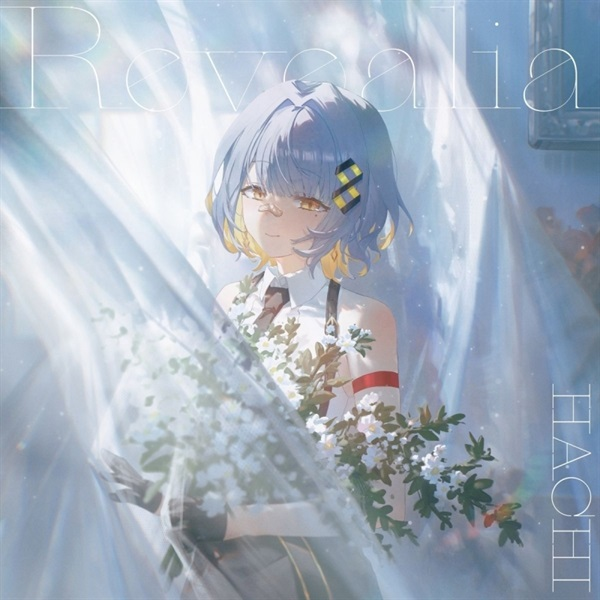

她以清澈柔美的嗓音，以及充滿情感的詮釋方式，深深打動了聽眾的心。
除了在國內外舉辦巡迴演唱會與線上線下音樂活動外，她也固定於 YouTube 上，每週兩次與粉絲分享音樂直播。
她那直擊人心的純淨歌聲與親切自然的談吐，使她始終與聽眾保持緊密的連結。
2024 年，她正式簽約 King Records 並正式出道。
作為一位持續拓展日本、海外及網路平台版圖的新生代藝術家，她正日益受到廣泛關注。
除了在國內外舉辦巡迴演唱會與線上線下音樂活動外，她也固定於 YouTube 上，每週兩次與粉絲分享音樂直播。
她那直擊人心的純淨歌聲與親切自然的談吐，使她始終與聽眾保持緊密的連結。
2024 年，她正式簽約 King Records 並正式出道。
作為一位持續拓展日本、海外及網路平台版圖的新生代藝術家，她正日益受到廣泛關注。
FOR ASTRA

REVEALIA
Click album to play